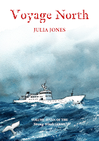
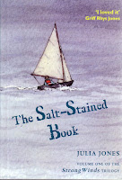
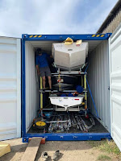
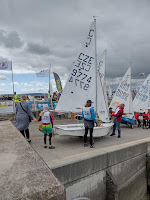

 |
| last book |
{kind=link}
At the end of Pebble, the sixth volume in the series, Donny the central character took a reckless decision to leave school, abandon his beautiful junk Strong Winds, fail to say goodbye to his mother and head north with a couple of dodgy Russians on a superyacht. Well, that was back in 2018 and, as you can imagine, I’ve been worrying about him ever since....
Why worry? Why not get on and write the next story, you might reasonably
ask. What use was lockdown except to get everyone completing projects that had lain forgotten for
decades? What could be more enjoyable than to stow away on the former Soviet
spy ship MY (Motor Yacht) Raisa, now a luxury, automated, expedition vessel
and discover what’s really going on between the morally suspect oligarch Arkady
Ivanov and the carefully un-named Russian President? Great escapism, surely?
The headline answers might be that from early 2020 the plight of people with dementia in care homes and hospital wards, officially separated from those dearest to them, made John’s Campaign a priority. Or I could say that the research for Uncommon Courage was quite intricate and absorbing...
Both reasons would be true – but the truer truth would be that I need
time on Peter Duck to help me write fiction and I also need to be able
to visit some of the places that are in the stories. Neither of those
essentials was in place until last October (2021) when Francis, all unknowing,
organised us a few days in the Shetland Islands, where some chapters of Voyage
North take place. Then, crucially, this March (2022) PD returned to
the Deben after her long sojourn in the boatyard shed and I felt the Aaah! factor
of profound relief.
Bits of the plot, however preposterous, started slipping
into place. I had to accept that direct research by me in Russia wasn’t going
to happen but at least PD has lived there. Her flag locker contains the snow-on-water-and-blood
(white-blue-red) of the Russian national flag as well as a cluster of flags
from the currently threatened Baltic states, Estonia, Latvia, Lithuania,
together with this year’s NATO applicants Sweden and Finland. If I dig down into the aft-locker of my head
when thinking about the process of writing Voyage North, I realise that
there’s a creative mish-mash of early-Ransomite, post-WW2, post-Glasnost
history which has touched Peter Duck in unexpected and various ways.
I say the aft-locker of my head, not the bilges (!), because I don’t forget the scent and the sight of the strong coiled warps that gave me such a shock of responsibility when I opened the locker in 1998/99 on her return from her travels. It was part of the jolt that finally pushed me into finding the confidence to write fiction. I realised how lucky I was to own PD; I considered how fortunate the children in those Swallows and Amazons novels had been. I wanted to write stories that brought them into the 21st century, that recognised issues such as disability, lack of money, the ugly side of state power: “Arthur Ransome meets Social Services” as someone dubbed the first book in the series.
 |
| first book |
{kind=link}
That all sounds a bit off-putting and pretentious. Voyage
North is an adventure story, not a psychological exhumation or a social
commentary. It needed to be written rather urgently as the central Strong
Winds series characters would persist in growing up, despite my best
efforts to claim fiction-time. Arthur Ransome encountered the same problem in Great
Northern? (published in 1947 when he was the owner of Peter Duck).
There comes a moment when series Must End. Donny was rising 13 in The
Salt-Stained Book (published 2011, written and re-written for a couple of
years before that). Now, even in fiction-time, he’s 16. Xanthe, oldest of the
Allies, has left school…
Personally, finishing Voyage North and completing the
7-book series feels like a great moment for me. Claudia Myatt has hurried to
her drawing board and magicked up illustrations, a front and back cover and
more maps than ever before. If nothing else this story is a real Voyage, not
just a potter down the Deben or a breeze across to Holland. It needs a proper celebration.
 |
| The dinghies are on their way |
{kind=link}
The Cadet dinghy was designed in 1947, the year Ransome’s
last novel Great Northern? was published and the year he made most
active use of Peter Duck. The dinghy was designed specifically for an
older child and a younger child to sail together, teaching and supporting each
other. There’s no room for adults. This is unique. Within the UK and across the
world there’s a wonderful variety of single-handed and double-handed dinghies,
but nothing else that structurally requires this combination of ‘helm’ and
‘crew’ sailing together and which is also enshrined in the Cadet class rules. I
still feel amazed by the brilliance of this concept. It’s been wonderful to
watch my grandchildren benefitting from it.
The Cadet is an international class, sailed in 35 countries
across five continents. Many successful racing sailors have come through this
system, representing many different countries. Take a look at the International
Roll of Honour here. https://cadetclass.org/2021/02/03/cadet-alumni/
Many more young people have simply
learned to sail in a Cadet, have made friends and have probably learned about
their own capabilities as well as the wind and waves. When Francis and I went
to watch the Cadet sailors in action in Torquay this summer I was mainly moved
by their courage and resilience – as well as their general enthusiasm and
friendliness.
It was a combined National and European event so there were competitors from Belgium, France, Germany, Poland, Czechoslovakia and a single boat from Ukraine. 80 small boats, filled with 160 7-17 year olds. There was quite a narrow exit from the harbour out into the open water and on the first day that we were watching, there was a stiff breeze blowing directly through the opening. All you’d have seen, as you angled your dinghy hard into the wind to leave the harbour for the first time, was choppy waves and white caps. That was a practice day and I felt admiration for the youngsters who were choosing to have a go. I’m not sure I’d have wanted to.
 |
| Letting go |
.jpg){kind=link}
On the following day, the first day of racing, I felt a lump in my throat as I watched the competitors setting off. There was a small girl in a headscarf being hugged by her mum before she set off as crew in one of the Czech boats. Both were weepy but they did it. The child sailed off; the mum let go.
The size of the UK Cadet fleet has diminished radically in
recent years. Perhaps they are as retro as the current Golden Globe race with
its slogan ‘Sail like it’s 1968’. This makes it hard for them to attract recognition
and sponsorship and their survival depends on the dogged determination of the
Cadet parents as well as their offspring. Weekend after weekend is given up to
support and transport duties. This weekend (Sept 3-4) they were putting
scaffolding together to make cradles for the dinghies inside the container as
they set off on their 13,102 nm haul. Next weekend they’ll be running a quiz
and an auction of promises; every weekend there will be training or club
racing, until the sailors themselves set off in December.
This reliance on committed, self-funding, parents does make
social inclusivity some of a problem. It’s part of an acknowledged issue that
the wider sailing world needs to address. ‘Equipment sports’ – such as sailing,
skiing and equestrianism – are notoriously ‘white’ sports in Olympic terms. There
are many possible reasons for this that need thinking about in the 21st
century world, but one aspect may be that they are financially demanding. Probably
the most far-fetched fiction in Voyage North, set in an Olympic year, is
the suggestion that Xanthe Ribiero, a young sailor of Ghanaian descent, will
make it to the final team – though she does have wonderfully committed parents.
Are the GBR Cadet sailors just middle-class kids going on an
adventure holiday? Of course not. They have earned the right to represent their
country by their personal courage and determination, as well as by their sailing
skill – and the commitment of their clubs and families.
But what about the flying or the loading of dinghies into
the sea container? Is this environmentally responsible? We might ask whether any
international competition that requires global travel is acceptable, when we
watch countries like Pakistan currently struggling with the effects of global
warming. How much do the international friendships, personal development and
wider understandings count against the X-tra quantity of greenhouse gas emitted
by long distance travel?
These young competitors are going to Australia, to exert
themselves, put their talents to the test. They are proud to be representing
their country. And, fortunately, they are also the generation most concerned by
the environmental issues. They are not complacent or self-centred. On Oct 15th,
the publication day for Voyage North, each team of two – the older and
the younger – will be making their personal pledges, either to achieve some eco-friendly
change, or to do something direct to offer other young people an opportunity to
get involved in the sport they love.
I feel at least as glad to be supporting them as I do to have finished my series.
***
I've not spent the time putting photos into this post - it's been a long day.. But if you want an impression of the spirit and gutsiness of these 7-17 year olds here's a recent set of photos at Waldringfield taken by yachting journalist Robert Deaves
https://www.facebook.com/WaldringfieldSailingClub/photos/pcb.2574518772678272/2574516849345131/